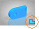

Working with files in Xcelerator Share
The new Xcelerator Share cloud collaboration tool lets you share project files with partners, team members, and manufacturers, from anywhere, at any time. Siemens Connector constantly synchronizes your files between desktop and the cloud.
You can access Share from within Solid Edge or from https://share.sws.siemens.com/.
When accessing Share in Solid Edge, you can open your cloud files in Solid Edge, modify them, mark them up, and then save them to the cloud. When using Share in a browser, you can create projects, upload files to the projects, mark up your files, and share projects with collaborators. Because Share in a browser offers a collaborative space, you can work on new products and designs, and then share your projects with customers for approval or manufacturers for production.
On mobile devices with rear-facing cameras, you use augmented reality (AR) to view your 3D model in a real-world environment.
Set up Xcelerator Share in Solid Edge
If you are an administrator, you will receive instructions on configuring Xcelerator Share for the team and will be guided through setting up your team space.
-
From the File menu, choose Account.
-
Do one of the following:
-
If you already have an account, choose Sign In.
-
If you do not have a Siemens ID (WebKey account), click the link Create a user name and password.
-
-
Follow the prompts to sign in.
Install Siemens Connector
You can install the file synchronization connector when you sign in to Xcelerator Share through Solid Edge or you can install it when using Share in a browser, as explained in the Share help available from https://share.sws.siemens.com/.
Define the storage location and types of cloud files
-
Open Siemens Connector from the Start menu or from the system tray.
-
In the Local Folder box, specify where you want to store cloud files on your computer.
When you want to add files to Xcelerator Share, you can save them from Solid Edge to the location you specify here.
The default location is C:\Users\<user name>\Connector.
-
To select the projects you want to synchronize to your computer, click Select Projects.
The projects are saved to the location you defined, and are organized into three folders in the file system:
-
Home
The Home folder is a special project--your unique, personal folder. Every user has a Home folder.
-
Projects
The Projects folder contains all your projects, including those you share with others.
-
Shared with me
The Shared with me folder contains all projects others shared with you.
You can view all projects in the Xcelerator Share interface.
-
-
To select the file types you want to synchronize to your computer, click Select File Types.
Open cloud files in Solid Edge
When you open a file, Solid Edge locks it for other users for as long as you have the file open. You can check out the file for long-term use by selecting the Check Out command on the Data Management tab. For more information, see Check out documents.
To open a file, in the Actions column, click the Solid Edge logo that corresponds to the file you want to open.
In the list of recently used files, cloud files are identified by a blue icon on the bottom right corner of the thumbnail.

Share changes with colleagues
To communicate changes to your collaborators, you can mark up models and share them as needed.
-
Open in Solid Edge the cloud file of interest.
-
Click Mark up and Measure .
-
Use the mark up and measure functionality to make notes about the model, measure lengths and distances, and view the model from different angles.
-
To save your markup so you can share it with others, click Save .
Add files to Xcelerator Share
When working in Solid Edge, you can add files to Share by saving them from Solid Edge to the location where you configured Siemens Connector to store files or by using Design Manager to move files to the connector location. For information about Design Manager, see Welcome to Design Manager.
You can also add files to Xcelerator Share by using Upload in Share in a browser.